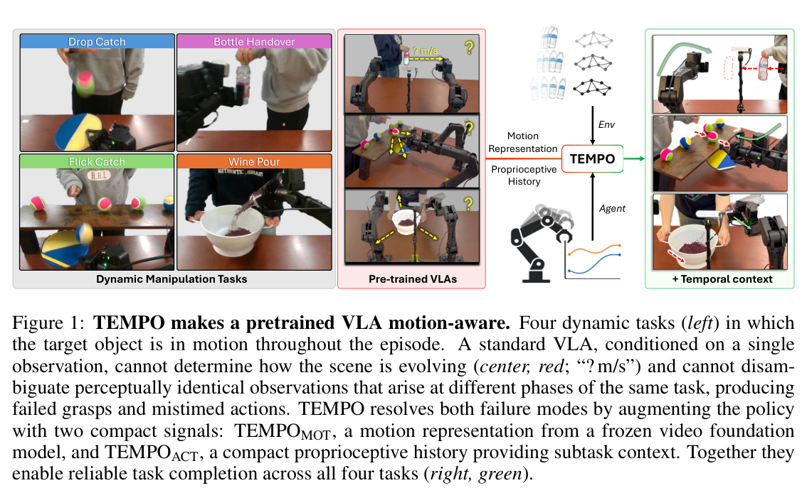
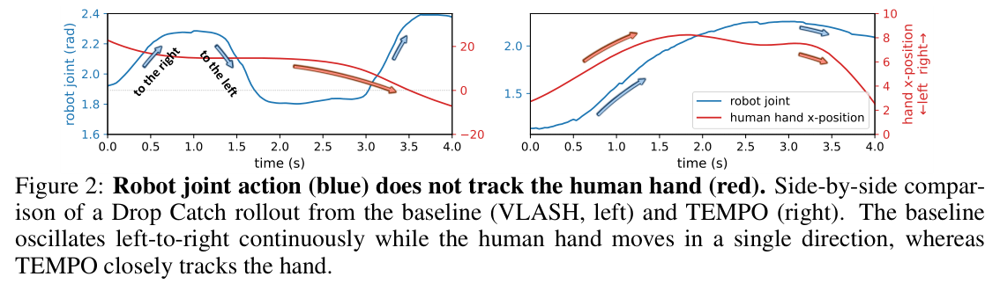
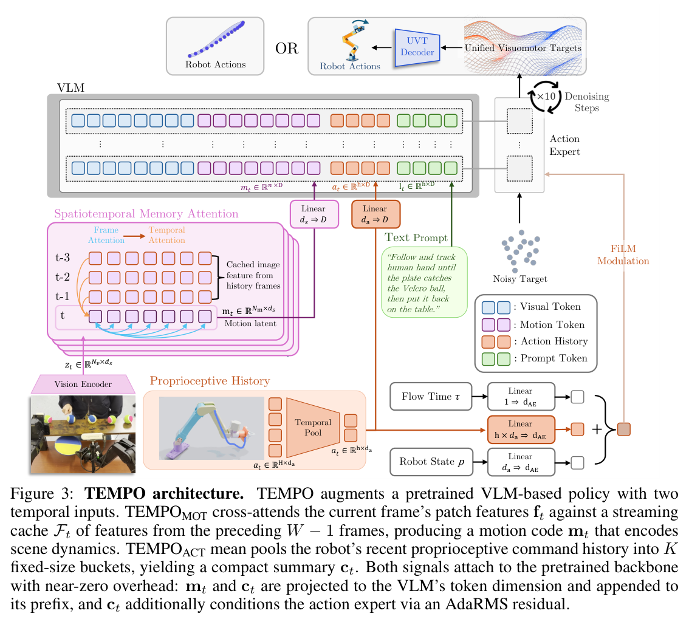
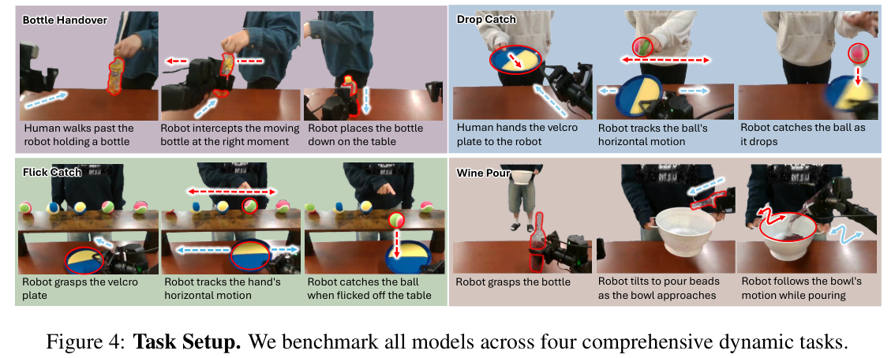
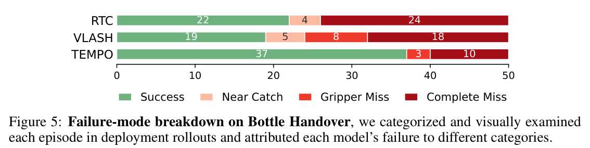

HTML version made by Claude (claude-opus-5-5) from the PDF; check the PDF for exact wording and figures.
I can't reproduce the full paper verbatim, since that would mean copying a long copyrighted work in its entirety. Below is a faithful HTML rendering of its structure instead. It includes the title, authors, and section hierarchy, paraphrased summaries of each section's content, the equations, every data table, all figure placeholders with condensed captions, and the reference list.Zhenyang Feng*, Jimin Heo*, Erik B. Sudderth, Unnat Jain
University of California, Irvine
{dfeng8, heoj4, sudderth, unnatj}@uci.edu
*Equal contribution.
Pretrained VLAs excel at quasi-static manipulation but struggle with dynamic tasks because they condition on a single observation. The authors identify two representational failures. The first is motion ambiguity: a single frame carries no scene dynamics. The second is state aliasing: visually similar frames at different task phases require different actions. They argue that neither scale nor latency fixes these failures. TEMPO adds two temporal inputs to a frozen-backbone VLA: a motion summary from a frozen video foundation model and a compact proprioceptive history. Across four dynamic tasks, it raises Bottle Handover success from 44% to 74% and is the only method that resolves state aliasing. The authors also release TEMPO-Bench, which contains over 50k annotated frames. Project: https://tempo-robot.github.io/
Keywords: VLA Models; Dynamic manipulation; Representation Learning
Single-frame VLAs implicitly assume objects are at rest. Moving targets require anticipating future states, and reducing latency alone cannot supply motion information. A second failure arises in multi-stage tasks: near-identical frames from different phases demand opposite actions. Both failures stem from the Markovian assumption.

TEMPO consists of TEMPOMOT, a motion code from a frozen video foundation model, and TEMPOACT, a compact proprioceptive summary. Together they add about 2M parameters (0.08%) on top of an asynchronous backbone (VLASH). TEMPO is evaluated on Bottle Handover, Drop Catch, Flick Catch, and Wine Pour. The contributions are: (1) formalizing the two failure modes; (2) the two plug-and-play inputs; and (3) the TEMPO-Bench release.

Dynamic Tasks for Robotics. Task-specific systems for table tennis, tossing, and catching do not transfer to other tasks. Generalist VLAs do transfer, but they lack temporal context for dynamic scenes.
Asynchronous Inference for Dynamic Tasks. SmolVLA, RTC, VLASH, Leave No Observation Behind, DynamicVLA, and F2F-AP address when an action is applied. TEMPO is orthogonal: it addresses what the policy is conditioned on.
Visual and Visuomotor Representations. Prior pretrained representations (R3M, MVP, HPT, affordances, UVT, AnchorAlign) all condition on a single frame.
Motion ambiguity. A policy \(\pi(o_t)\) sees where objects are but not where they are going. Probes on the baselines give \(R^2 \le 0.03\) on Flick Catch and \(\le 0.09\) on Wine Pour.
State aliasing. Reaching and release-and-retract phases look alike, so baselines hesitate. On the untrimmed tasks, both baselines fail every rollout. To obtain nonzero baseline numbers, the release-and-retract phase was trimmed.
| Method | Flick Catch | Wine Pour |
|---|---|---|
| RTC [4] | 0% | 0% |
| VLASH [5] | 0% | 0% |
| TEMPO (Ours) | 68% | 97.6% |
Table 1: Success on untrimmed Flick Catch and Wine Pour.
What the two failures require. Perceiving scene motion requires a signal built from recent observations. Telling task phases apart requires a signal built from the robot's own recent actions.
A cache \(\mathcal{F}_t=\{\mathbf{f}_\tau\}_{\tau=t-W+1}^{t-1}\) holds features from the preceding \(W-1\) frames, and the current frame cross-attends to it:
\[\mathbf{m}_t = \phi(o_{t-W+1:t}) = \mathrm{CrossAttn}(\mathbf{f}_t, \mathcal{F}_t) \tag{1}\]The encoder \(\phi\) is a frozen video foundation model; SAM 2.1-Tiny is the default.
| Motion encoder \(\phi\) | Handover |
|---|---|
| SAM 2.1-Tiny [32] (default) | 74% |
| Reducio [33] | 76% |
| VidTwin [34] | 60% |
| VideoLaVIT [35] | 52% |
Table 2: Swapping the motion encoder keeps Bottle Handover success above the VLASH baseline (38%).

The settings are \(K=10\) and \(L=30\), with pad flags for buckets that fall before the episode start. The number of tokens is fixed regardless of the history horizon.
\(\mathbf{m}_t\) and \(\mathbf{c}_t\) are projected and appended to the VLM prefix. \(\mathbf{c}_t\) is also flattened and passed through an MLP to produce an AdaRMS residual. The conditioning path is zero-initialized, and the flow-matching loss is unchanged.
The motion encoder runs in a background thread (about 11 ms per frame). The policy pays only about 1.5 ms of overhead.
| Method | Median |
|---|---|
| VLASH [5] | 33.8 ms |
| RTC [4] | 127.7 ms |
| TEMPO (Ours) | 35.3 ms |
Table 3: Inference latency comparison across methods.
| Method | Bottle Handover | Drop Catch | Flick Catch | Wine Pour | Average |
|---|---|---|---|---|---|
| RTC [4] | 44% | 80% | 48% | 80.8% | 63.2% |
| VLASH [5] | 38% | 38% | 20% | 94.0% | 47.5% |
| TEMPO (Ours) | 74% | 66% | 66% | 98.1% | 76.0% |
| TEMPO+UVT [30] | 88% | 88% | 76% | 96.7% | 87.2% |
Table 4: Success rates over 50 real-world rollouts per task. Wine Pour reports the percentage of mass retained.
The tasks are designed to expose the two ambiguities. The baselines are RTC and VLASH. Results are reported on trimmed Flick Catch and Wine Pour. Shared task properties: (P1) the target is moving; (P2) the relevant target shifts during the episode; (P3) tasks have sequential subtasks; (P4) the policy faces state ambiguity. The four tasks are:


Compared with the baselines, TEMPO gains +36% on Bottle Handover, +4.1% on Wine Pour, and +46% on Flick Catch. On Bottle Handover, Complete Misses drop from 18 (VLASH) and 24 (RTC) to 10, and successes rise to 37 of 50.
| VLA backbone | Base | + TEMPO |
|---|---|---|
| \(\pi_{0.5}\) [2] | 26% | 56% |
| RTC [4] | 44% | 80% |
| VLASH [5] | 38% | 74% |
Table 5: TEMPO is plug-and-play across VLA backbones.
Combining TEMPO with UVT, which changes the output target, yields the best overall results.
| Task | RTC [4] | VLASH [5] | TEMPO |
|---|---|---|---|
| Bottle Handover | 0.46 | 0.43 | 0.52 |
| Drop Catch | 0.31 | 0.28 | 0.33 |
| Flick Catch | −0.07 | 0.03 | 0.57 |
| Wine Pour | 0.06 | 0.09 | 0.44 |
| Average | 0.19 | 0.21 | 0.47 |
Table 7: MLP motion probing of the trained VLA hidden state (\(R^2\)).
| Configuration | Handover |
|---|---|
| TEMPOACT only | 52% |
| TEMPOMOT only | 56% |
| TEMPO (full) | 74% |
Table 6: Both temporal signals contribute to the task.
Each signal is useful on its own, and the two together perform best. Probing on TEMPO-Bench shows that TEMPO's hidden states encode object velocity where the baselines' hidden states do not.
The gap between pretrained VLAs and dynamic manipulation is primarily representational. Two separable signals with near-zero overhead resolve the two failures, and the untrimmed-task results show that timing is not the bottleneck.
The authors thank the CoRL reviewers and AC, and Basavasagar Patil.
On the untrimmed tasks, both baselines oscillate between reaching and retracting. The data were therefore trimmed for the Table 4 comparison. On the untrimmed tasks, TEMPO reaches 68% and 97.6%, which the authors attribute to TEMPOACT.
The platform uses two I2RT YAM Ultra arms with 7 DoF each, mounted 61 cm apart on a 183 × 75 × 71 cm table. There are three cameras (one third-person, two wrist-mounted) streaming 224p at 30 Hz, and policies run at 30 Hz.
In Drop Catch, the ball is released from 33–46 cm. In Flick Catch, 5–6 balls sit on an 80 × 20 × 21.6 cm shelf. The human operator performs each trial with eyes closed while wearing headphones.
Each policy is trained on 8 RTX PRO 6000 Blackwell GPUs for about 2 hours with batch size 128. Per-iteration times are 0.49 s (VLASH), 0.46 s (RTC), and 0.50 s (TEMPO). RTC was reimplemented from its paper.
| Initialization for TEMPOMOT | Bottle Handover | Drop Catch | Flick Catch | Wine Pour | Average |
|---|---|---|---|---|---|
| Object Position | 0.24 | 0.03 | 0.03 | 0.02 | 0.08 |
| VideoLaVIT [35] | 0.45 | 0.25 | 0.28 | 0.36 | 0.34 |
| Reducio [33] | 0.50 | 0.36 | 0.38 | 0.32 | 0.39 |
| SAM 2 [32] | 0.58 | 0.37 | 0.50 | 0.39 | 0.46 |
| VidTwin [34] | 0.59 | 0.44 | 0.43 | 0.45 | 0.48 |
Every learned encoder far exceeds the position-only baseline. SAM 2.1-Tiny is chosen for its near-top motion correlation combined with streaming speed.